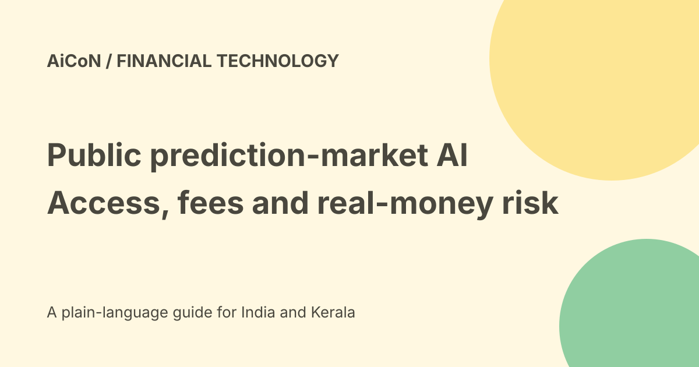

Public prediction-market agents: US access, fees and risk
Public announced AI Agents for Prediction Markets on 24 September 2026, in partnership with Kalshi. Members can trade event contracts or use changing event probabilities as signals for other portfolio actions. This is real-money trading, not a free game or a guarantee that an AI forecast is correct.

What a prediction market means
An event contract concerns a defined outcome, such as whether an economic event happens. Market prices can imply a probability, but they reflect trading, liquidity and the contract's rules.
A quoted probability is not certain knowledge of the future. Read the exact resolution conditions rather than relying only on a short event title.
Two different uses
Public's release describes trading an event directly or using its market data to trigger a stock, bond or other portfolio action.
An alert about a probability change is different from an automatic trade. Separate information gathering from the authority to place an order. A small signal change can still produce a large financial commitment if the rule is written that way.
Vendor examples are not recommendations
The launch includes examples of event thresholds triggering stock or options trades. They illustrate product mechanics, not a suitable strategy for every investor.
This article does not recommend a contract, security, portfolio allocation or trading rule. No account was opened, agent activated or order placed.
US account requirements
Public's account FAQ lists age eighteen or older, a valid Social Security Number, a legal US residential address and US citizenship, permanent residence or a valid visa.
That is more precise than saying all Indian citizens are prohibited. An India-based reader without those requirements should not assume access, while nationality alone does not settle eligibility for someone legally resident in the US.
No particular account's eligibility or prediction-market entitlement was tested.
Agent access and fees
The Agent FAQ says Public Premium is not required and accounts off the waitlist have Agent access. Standard trading and account fees still apply to actions performed by an Agent.
The prediction-market fee page lists two US cents per contract traded: one cent exchange fee and one cent commission. At the checked Wise mid-market rate of about ₹96.47 per US dollar, two cents is roughly ₹1.93. That conversion is only explanatory, not an Indian purchase quote.
The actual order screen and full fee disclosure govern the charge. Contract prices, other asset fees and possible account costs are separate. No final trade total was calculated.
No backtesting in the checked FAQ
The Agent FAQ says backtesting is not yet available and is on the roadmap. It says users can review logic in the plan preview before activation and inspect logged runs afterwards.
Reviewing a plan is not a simulation of how it would have performed across past conditions. Do not imply a strategy has been tested merely because its rules sound clear.
What to inspect before any activation
- Confirm account and market eligibility.
- Read the event's exact outcome and settlement rules.
- Identify the data source and refresh behaviour.
- Separate an alert-only rule from a trading rule.
- Review amounts, instruments and total exposure.
- Check fees and what happens if orders fail.
- Define when the automation must stop.
- Review the plan and risk independently.
- Inspect logs and positions after authorised activity.
This checklist is product education, not a suggestion to trade or bypass regional rules.
Risk is not removed by regulation
The release describes Kalshi as a CFTC-regulated exchange. Regulatory status does not guarantee a profitable outcome, correct signal or flawless automated action.
Event probabilities can move rapidly. Data can be stale, a rule can be misunderstood and a market order can execute at an unexpected price. Options and leveraged exposure can carry additional risks beyond a simple event contract.
Data and privacy
A brokerage connection can expose holdings, transactions and financial context. Review what the Agent can read and change, and keep access within its intended purpose.
Do not share credentials or account documents with an unverified person claiming to help set up a profitable bot.
What changed since the original post?
We replace a simple India ban with the actual US account criteria, add per-contract fees and the current no-backtesting limitation, and separate signals from real trades.
Frequently asked questions
Is Agent access the same as free trading?
No. Standard fees apply.
Does a probability prove an outcome?
No.
Was a strategy tested?
No.
Sources: Public-issued launch release · Official account requirements · Official Agent access and limits · Official prediction-market fees · Wise conversion reference. Checked 7 October 2026.